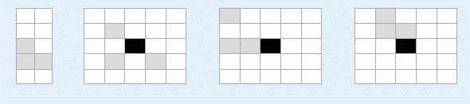

佳佳最近被一个叫做“丹奇方块”的游戏吸引住了，但是却因为游戏太难而迟迟无法通关。游戏在一个没有边界的棋盘上进行，中心(0,0)处有一块黑色的障碍物，不远处坐标值为奇数的N个不同的格子中各有一个灰色方块。游戏的任务是把所有灰色方块全部粘起来组成一个给定的形状，如图一所示。该形状可以出现在棋盘上的任何位置，但不能旋转或者对称。图二描述了一个合法的初始状态，其中在坐标(-1,-1),(1,-1),(1,1)处各有一个灰色方块。

这个游戏看起来简单，但方块数目多，目标形状又很复杂的时候游戏者往往需要很多步才能完成。佳佳希望找到一个不超过2000步的解决方案，你能帮帮他吗？